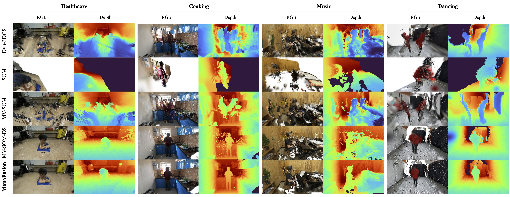
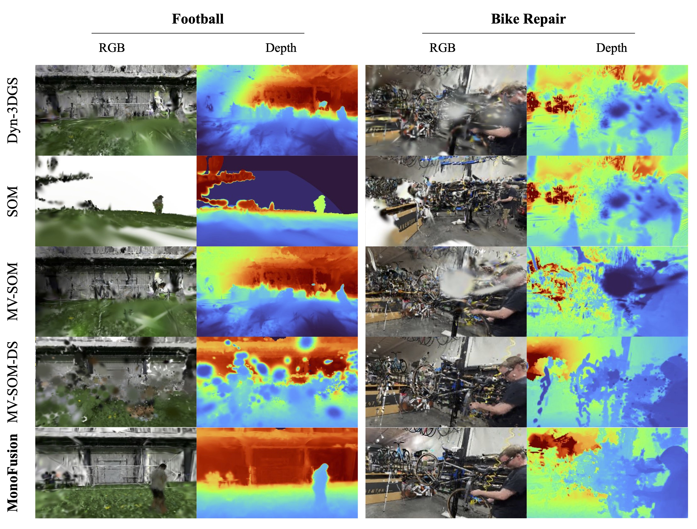
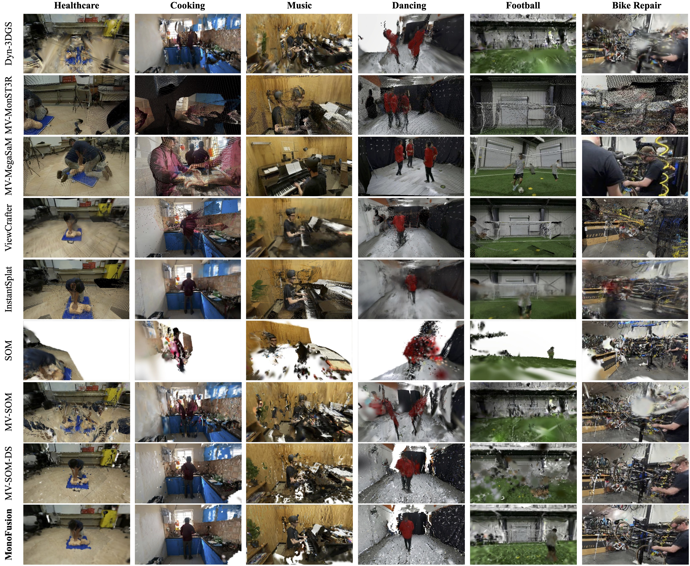

Given sparse-view videos of dynamic scenes, our approach reconstructs 3D geometry and motion, enabling extreme novel view synthesis, 3D tracking, and feature distillation. Our sparse-view (4-camera) setup strikes a balance between ill-posed reconstructions from casual monocular captures and well-constrained reconstructions from dense multi-view studio captures.
4D Scene Reconstruction that Supports Free-View Synthesis
We show comprehensive results that cover all categories of egoexo4D! Even those complex, highly-occuluded scene. (We omit the training view for better visualization experience later)
Bike Repair
EgoView Synthesis (Follow the Dance!)
With 4 camera set-up, we can enable egoview synthesis at anywhere in the scene, boosting possible embodied applications! [Left: gt provided by EgoExo4D, Right: our synthesised view] (Different colour is led by different camera sensors, foreground in our reconstruction has been removed)
More Results!
HealthCare - CPR
Music - Piano
Cooking - Scrumble Egg
Sports - Football
Panoptic - Baseball
Abstract
We address the problem of dynamic scene reconstruction from sparse-view videos. Prior work often requires dense multi-view captures using dozens of calibrated cameras (e.g. Panoptic Studio), or short monocular videos with limited information (e.g. DAVIS). In contrast, we aim to reconstruct diverse dynamic human behaviors, such as repairing a bike or dancing from sparse-view videos.
We repurpose state-of-the-art monocular reconstruction methods for sparse-view reconstruction and find that careful initialization from time- and view-consistent monocular depth estimators produces more accurate reconstructions. Specifically, our method predicts dense surface points across all training views, and uses confidence-aware pixel alignment to initialize scene geometry. We further distill per-point semantic features from 2D foundation models, and use feature clustering to encode a compact set of motion bases. Finally, we employ a gradient-based joint optimization framework to simultaneously learn scene geometry and motion.
Notably, our approach achieves state-of-the-art performance on challenging sequences from the Ego-Exo4D dataset.
Contribution
Method Overview
As dynamic scene reconstruction from sparse views is extremely challenging, we present two key insights to initialize plausible geometry and motion:
Experiments
Concrete steps to validate our points:
- Perfect training views (prove correct implementation)
- Perfect near-novel (5°) view synthesis (illustrate that the method works, like other approaches)
- Great extreme-novel (45°) view synthesis (demonstrate free-viewpoint rendering, no one did it before)
- Held-out camera evaluation (90°) (use 3 out of 4 cameras for training and leave 1 out for qualitative results)
Selected Qualitative Results
45° Novel View Synthesis Comparison (1)
45° Novel View Synthesis Comparison (2)
45° Novel View Synthesis Comparison (3)
Existing monocular methods and their extension to multi-view produce poor results rendered from a drastically different novel view. MV-SOM improves upon SOM in 45° novel-view synthesis. Our method's careful point cloud initialization and feature-based motion bases further improve on MV-SOM.